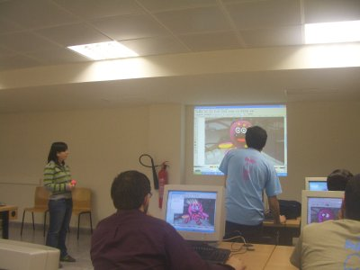
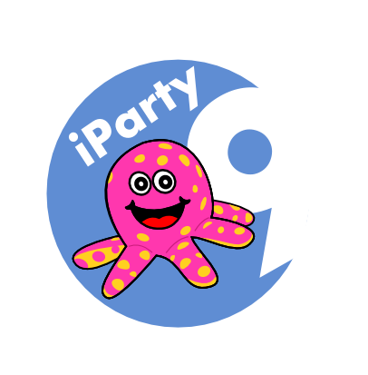
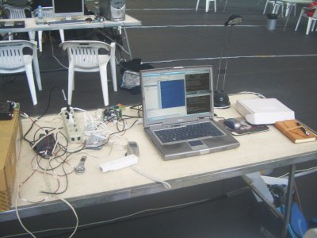
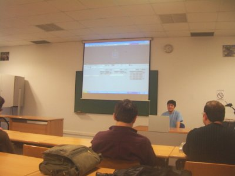
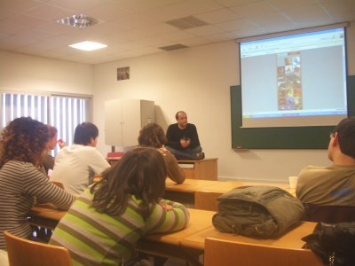
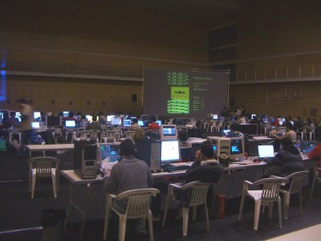
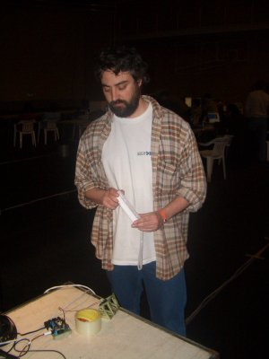
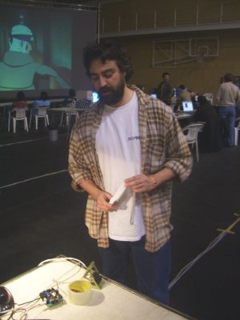
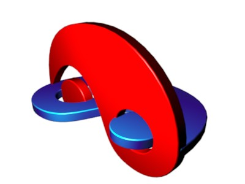
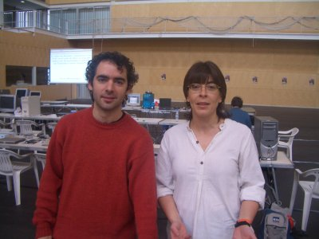

|
"Robótica Modular Libre”. iParty 9. Universidad Jaume I. (UJI). Castellón de la Plana. Abril 2007 |
A las 12 fue el taller de Inkscape, a cargo de Alicia Andrés (zona lunar) (foto de la izquierda). De una manera muy práctica, nos explicó brevemente el interfaz de este programa y luego dibujamos a Chan, el pulpo mascota de la iParty. Se me olvidó hacer una copia de mi versión del pulpo, pero pongo en la derecha la versión “oficial”.
Conocía el Inkscape de oídas, pero nunca me había puesto a trabajar con él. Y me gustó muchísimo. Creo que muchas de las figuras de mi tesis las voy a hacer con este programa. ¡Gracias Alicia! ;-)
|
 |
 |
Después de comer me entró la vena friki. Tenía que quedarme un par de horas con el ordenador para investigar el tema del mando de la wii. Mi idea era poderlo leer desde el bluetooth de mi portátil y poder controlar el flexo que tenía en mi mesa (encenderlo y apagarlo).
Durante la campus party 2006 hicimos el proyecto “el faro de la campus”. Empezamos controlando el encendido y apagado de un flexo desde un programa en C en el portátil y acabamos montando 7 faros controlados desde internet :-) Ahora lo que quería hacer es controlar la luz con el mando de la wii de dos maneras diferentes: una apretando los botos y la otra de forma gestual, levantando y bajando el brazo.
Primero puse en marcha el bluetooth de mi portátil. Aunque parezca mentira, nunca hasta entonces lo había usado. Buscando por internet me encontré con este maravilloso trabajo escrito por Álvaro del Castillo (ACS): Soporte Bluetooth en Linux 2.6. ¡Gracias Álvaro! Por cierto, que ACS y yo habíamos sido compañeros de Escuela en la UPM en Madrid. Me dejaron un mando de la Wii y siguiendo las instrucciones de ese documento conseguí conectarme a él y sacar su dirección.
Después puse en marcha la librería libwiimote-04 y el ejemplo en OpenGL realizado por Carlos González Morcillo que encontré a través del blog de Pikao. Es un programa de ejemplo que se conecta al mando de la wii y lee continuamente los botones y los ángulos pitch y roll, dibujando un cubo en tiempo real con OpenGL. Pues bien, usando ese ejemplo y tomando lo que ya tenía hecho del control de la lampara, hice un primer prototipo para encender y apagar el flexo usando los botones 1 y 2 de la wii. ¡¡Era como tener un mando a distancia para controlar el flexo!! Super divertido ;-) En la foto de la derecha se puede ver mi mesa de trabajo: portátil, flexo, regleta, mando de la wii, tarjeta Skypic y cables varios ;-)
Estaba tan emocionado que se me pasó el tiempo muy rápido y llegué un poco tarde a la charla que dió Emilio Molina (Mars Attack!) sobre Blender. Pero llegué a la parte que más me interesaba: el game engine. Es un motor que tiene el Blender para hacer juegos. Estoy muy interesado en él porque quiero hacer scripts en Python para controlar los robots desde Blender. Todavía no lo he conseguido, pero es mi siguiente proyecto friki ;-). Me encantó la aplicación final que nos mostró: una visita virtual al campus de la UJI, que había hecho como proyecto final de carrera.
|
 |
 |
El siguiente ponente fue Daniel Martínez Lara (pepeland), un animador digital (foto de la izquierda). Como yo no estoy metido en el mundo de la animación, no lo conocía. Pero cuando empezó a hablar y a enseñar sus cortos, muchos de ellos sí que los había visto. Nos estuvo hablando sobre su trayectoria profesional. Fue una charla muy amena y divertida.
Una de las cosas que saqué en claro es que hay mucha relación entre la animación y la robótica. Ellos usan técnicas de animación y herramientas que son muy útiles para la robótica y vice-versa. Creo que la robótica también puede aportar cosas al mundo de la animación. Al terminar me entraron unas ganas terribles de empezar a aprender más sobre Blender y mover mis robots :-)
En la foto de la derecha se puede ver el ambiente del viernes por la noche.
|
 |
 |
Después de cenar llegó el momento de continuar con mis frikeos. Tenía toda la noche por delante!!. Como ya podía controlar el flexo con los botones de la wii, el siguiente paso era hacerlo en modo gestual... y funcionó muy bien! Hacía tiempo que no veía algo tan friki. Si cogía el mando y levantaba el brazo, la luz se encendía. Si lo bajaba se apagaba... jajaja fue muy divertido...
Pero todo eso no era más que la punta del iceberg. Realmente lo que quería hacer con el mando de la wii era controlar mis robots. Y el primer paso es mover primer sólo un módulo. Grabé en una Skypic el firmware servos8, la conecté al portátil y modifiqué el programa para mover el servo en vez de encender y apagar la luz. El resultado fue muy divertido. Inclinando el mando de la wii, el servo se movía de igual forma, con un pelín de retraso. En las fotos de abajo se puede ver a Ignacio Gil jugando con el invento. En la izquierda se ve que el mando está inclinado con su parte superior mirando hacia la izquierda de la foto y en la parte inferior se puede ver que el módulo tiene la misma inclinación. En la foto de la derecha el mando está inclinado en la dirección opuesta y módulo Y1 también. :-)
La aplicación del flexo la he llamado wii-lamp y la de control del servo wii-servo. Como no podía ser de otra manera, aquí dejo las fuentes, que incluyen las fuentes de la librería wiimote: wii-lamp-servo.tar.gz. Para compilar hay que hacer Make. El proyecto NO está documentado y es un puro lío, fruto de una noche de frikismo espasmódico... pero más adelante lo pondré bonito y en una página aparte ;-)
|
 |
 |
Esa noche, sobre las 2 de la madrugada, llegó Xavier de Blas. El sábado por la noche tenía su LinuxShow. Sobre las 2 y media nos fuimos al hotel a dormir.
El sábado por la mañana llegamos pronto a la iParty. Yo me fuí al taller de Blender dado por Merce Galán (Megacat). Nos enseñó modelado y animación básicas con Blender, aplicadas a la creación de un logotipo animado, como el que se muestra en la foto de la izquierda.
El taller estuvo muy muy bien. Se aprende muchísimo viendo ćomo la gente maneja el programa. Aquí dejo el logo que hice yo: logo.blend.
Terminamos sobre las 13h y yo me tenía que ir a la estación. Mi tren salía sobre las 14h. En la foto de la derecha se puede ver a Xavier de Blas y a Gloria Martínez. Laura muy amablemente me acercó a la estación. ¡Muchas gracias! ;-)
Y con esto terminaron mis aventuras en la iparty9 en Castellón. Como resumen final: me lo pasé genial, aprendí muchas cosas y sobre todo, frikee un montón :-D
|
 |
 |
A Gloria Martínez Vidal por invitarme a la iParty 9, a tomar varios cafés, recogerme de la estación, hacerse cargo de mi... :-) Muchas gracias por todo.
A Emilio José Molina por toda su ayuda prestada. ¡Cómo te lo curras! ;-)
Al resto de miembros de ADITEL que participaron en la organización. Muchas gracias :-)
A los que me transportaron en su coche: Ignacio Gil, Laura, Alicia Andrés y Xavier de Blas. Muchas gracias a todos ;-)
|
|